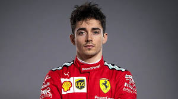

CHARLES LECLERC
Costuma-se dizer que os contos de fadas têm finais felizes. Charles Leclerc nasceu em La Condamine, uma das três cidades que compõem o
Principado de Mônaco. Embora sua vida tenha sido marcada por três derrotas de entes queridos, ele vive um presente esportivo de sonho ao vencer
duas das três datas disputadas nesta temporada e é um sólido líder do campeonato de Fórmula 1. Seus sucessos excitam a Ferrari, que depois de vários anos
estava de volta à frente.
Charles titulos
- vitorias 8
- podios 40
-
- pontos 1349

Leclerc veio ao mundo em 16 de outubro de 1997. Ele herdou sua paixão pelo automobilismo de seu pai, Hervé, que entre 1983 e 1988 correu
22 corridas na Fórmula 3. Ele então acompanhou seu filho em sua carreira esportiva. O início estava na pista de seu amigo francês, Philippe Bianchi,
em Brignoles, uma cidade localizada entre Marselha e Nice. Philippe era o pai de Jules, também piloto, oito anos mais velho que Charles, mas de quem
se tornou amigo íntimo.